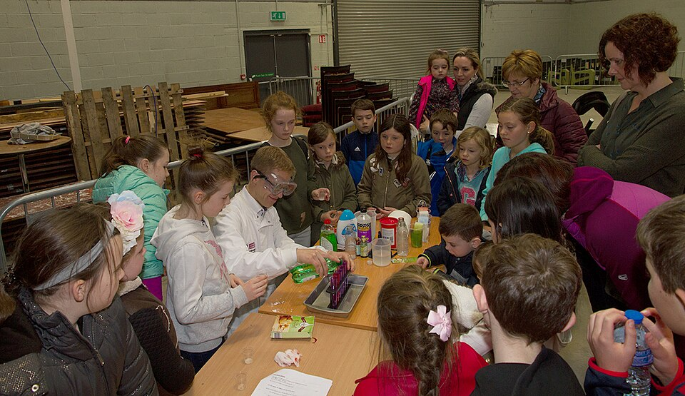
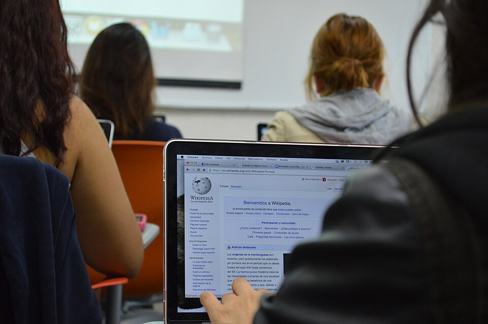

02 / Internet e Sociedade
Quem fica sabendo da feira?
Um site pode informar famílias que não viram o aviso. Se o endereço estiver errado, o mesmo link espalha o erro.

Para chegar a mais gente: faça a página leve, legível no celular e aberta sem login.
Para publicar com responsabilidade: confirme local e horário com a escola e combine quem atualiza a página.
Quem consegue criar e acessar esse site?

Uma ferramenta de IA pode facilitar o primeiro rascunho. Acesso a computador e conexão, tempo para aprender e condições para testar ainda fazem diferença. Compare a pesquisa TIC Educação · Cetic.br.
Oficina sobre a Wikipédia · Paolaricaurte · CC BY-SA 4.0